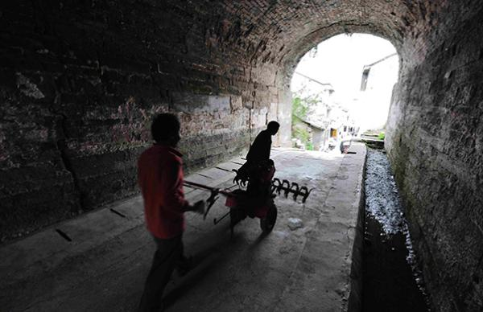
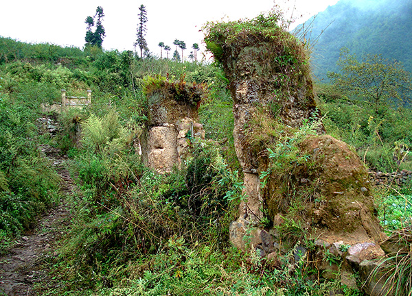

古道废城
羊圈门所在的清溪镇，扼古驿道要冲。始建于秦汉时期的丝道、茶道、盐道在此交汇。丝道自成都起，经雅安、荥经凤仪、汉源清溪、西昌至云南，再达缅甸和印度，史称蜀身毒道，是当时的国际通道。茶道由雅安名山起，经汉源清溪、富林进入泸定，再达康定。盐道自乐山起，经峨眉、峨边、汉源九襄后与丝道、茶道在清溪镇交汇，再延伸至藏区。
路石巧镶
大相岭俗称泥巴山，是四川盆地与西昌谷地之间的天然屏障。蜀汉丞相诸葛亮数次率大军翻越大相岭南下，平息民族纷争，让各族人民安居乐业。人们感念其恩德，将此山称为大相岭。而草鞋坪既是荥经和汉源的行政区划分界线，又是地理上的分界线。荥经那边湿润，汉源这边干燥，古时往来的背夫们到此，都会停下来换双草鞋，草鞋坪因之得名。南方丝绸之路雅安段最为艰险的24道拐，便位于羊圈门和草鞋坪之间。

山洪断道
在这斗折蛇行的道上攀行，其平缓的坡度并不令人感到累，反倒少了一些单调的感觉。道路两旁的植物，在初秋时节呈现多彩的颜色：一些灌木在大相岭的冷雾侵袭中，早早地呈现出红叶。一簇簇齐腰深的蒿草，挂满豌豆般大的金黄色草籽。一株株仅一人高的低矮的高山杜鹃，其如同涂了一层蜡油的树叶，被山雨洗涤得绿如翡翠……由于渺无人迹，灌木丛中蒿草堆里，不时枝摇叶晃，那是被我惊动的山雀在向更深处躲避。一些稍大的鸟类，如斑鸠、喜鹊则被惊飞，掠过我的头顶向更高处而去……
背夫悲歌
雾越来越浓，寒气越来越逼人，脚下的石块也越来越湿滑。周边的逶迤山岭，已与我所处的位置一般高，我如同腾云驾雾。
